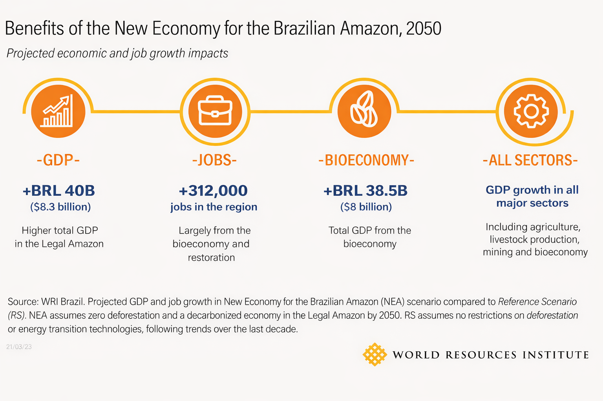
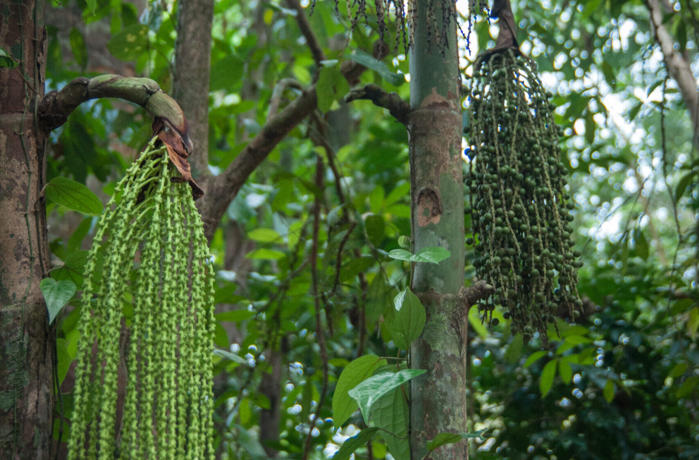

Pourquoi conserver la forêt amazonienne est financièrement plus rentable
Au Brésil, le mythe d'une croissance économique indissociable du défrichage intensif a la vie dure. Historiquement, l'expansion de la frontière agricole et minière s'est faite au prix du sang et de la sève. Aujourd'hui, les données scientifiques sont formelles : environ 26 % de l'écosystème amazonien a déjà été altéré ou détruit, approchant dangereusement du "point de bascule" irréversible (estimé à 20-25 % de déforestation stricte par le climatologue brésilien Carlos Nobre).
Les conséquences sont chiffrées : en 2021, les changements d'affectation des terres et la déforestation en Amazonie ont représenté 67 % des émissions totales de carbone du Brésil. Poursuivre sur cette trajectoire du "Business as Usual" condamnerait 59 millions d'hectares supplémentaires d'ici 2050, transformant le plus grand puits de carbone du monde en une véritable bombe climatique.
L'échec économique du modèle prédateur
Malgré les milliards générés par l'agrobusiness (soja, élevage bovin) dans des États comme le Mato Grosso ou le Pará, la richesse ruisselle peu. Les statistiques montrent un paradoxe accablant : l'exploitation intensive ne se traduit pas par un développement local. L'Amazonie abrite aujourd'hui les populations les plus pauvres et marginalisées du Brésil, avec un Indice de Développement Humain (IDH) systématiquement inférieur à la moyenne nationale dans les municipalités déboisées.

Un changement de paradigme à 40 milliards de réais
Un rapport décisif intitulé "Nouvelle économie pour l'Amazonie brésilienne", élaboré par le World Resources Institute (WRI) en partenariat avec plus de 70 chercheurs, vient pulvériser l'argument pro-déforestation. LeURS simulations économiques prouvent qu'un modèle "Zéro Déforestation" n'est pas seulement viable, il est extrêmement lucratif. La transition pourrait générer 312 000 emplois supplémentaires et ajouter 40 milliards de réais au PIB brésilien d'ici 2050.
« Transitionner vers cette économie bas-carbone nécessite un investissement de 1,8 % du PIB annuel du Brésil. Ce coût est deux fois inférieur aux pertes financières colossales (sécheresses, effondrement agricole) causées par l'inaction. »
Quatre leviers industriels et technologiques
Pour accomplir cette métamorphose, le rapport identifie quatre chantiers d'envergure nationale :
- L'explosion de la bioéconomie : Actuellement évaluée à 2,5 milliards de dollars, l'exploitation durable de 13 produits forestiers natifs (açaï, noix du Brésil, huile de pracaxi ou de copaïba pour l'industrie cosmétique et pharmaceutique) pourrait atteindre 8 milliards de dollars d'ici 2050.
- La restauration des pâturages : Le Brésil compte plus de 50 millions d'hectares de terres dégradées. La mise en place de Systèmes Agroforestiers (SAF) permet de combiner arbres natifs et agriculture commerciale, multipliant la rentabilité au mètre carré sans abattre un seul arbre supplémentaire.
- L'innovation énergétique : L'énergie solaire pourrait répondre à 55 % de la demande en électricité d'ici 2050. Des projets pionniers envisagent l'installation de panneaux solaires flottants directement sur les immenses barrages hydroélectriques existants (comme Balbina ou Tucuruí).
- La réorientation des flux financiers : Il s'agit de conditionner les crédits bancaires agricoles au respect strict des normes environnementales et de soutenir massivement les "écopreneurs" locaux soutenus par des réseaux comme l'Amazon Sacred Headwaters Alliance.

Alors que la région souffre de sécheresses historiques ayant récemment isolé des villes comme Manaus, la démonstration est faite : sauver l'Amazonie n'est plus seulement un impératif moral ou écologique, c'est la stratégie économique la plus rationnelle et rentable pour l'avenir de l'Amérique du Sud.